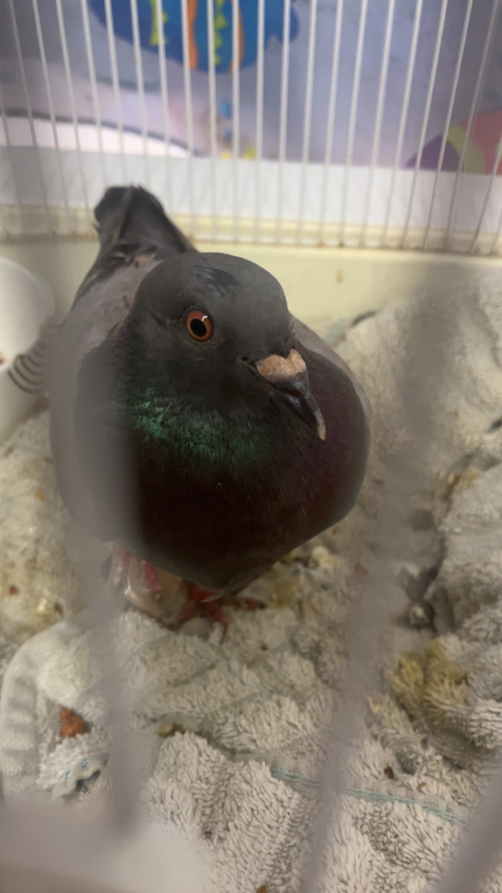

OUR MISSION
We focus on rehabilitation with veterinary care, pet placement via adoptions, and advocacy for domestic and feral pigeons who traditional rescue systems and practices have failed.
Adopt
A second chance for birds left behind
Second Chance Pigeon Rescue is a privately run pigeon rescue located in Franklin, OH. We are not a nonprofit organization, and donations are not tax-deductible. However, donations help us to offset rescue costs. SCPR plans to become 501(3)(c) rescue effort in the coming years.
About SCPR
We focus on rehabilitation with veterinary care, pet placement via adoptions, and advocacy for domestic and feral pigeons who traditional rescue systems and practices have failed.
Adopt